전자계산기조직응용기사 (2021-08-14 기출문제)
1과목: 전자계산기 프로그래밍
1. 작성된 표현식이 BNF 정의에 의해 바르게 작성되었는지를 확인하기 위하여 만든 트리는?
- Define Tree
- Parse Tree
- Control Tree
- Manipulation Tree
(정답률: 75%)

2. 피연산자 중 하나라도 참이면 참이 되는 C언어 연산자는?
- ||
- |
- &&
- &
(정답률: 72%)
3. 변수(Variable)에 대한 설명으로 틀린 것은?
- 변수는 프로그램 실행과정에서 하나의 기억장소를 차지하며 상수와는 달리 값이 변할 수 있다.
- 변수는 이름(name), 값(value), 속성(attribute), 참조(reference)의 요소로 구분된다.
- 참조(reference)는 자료 값에 따라 필요로 하는 기억장소를 확인할 수 있도록 하는 요소이다.
- 프로그래밍 과정에서 속성은 변할 수 없지만 변수명과 참조는 변할 수 있다.
(정답률: 81%)
4. 프로그램 수행 순서로 옳은 것은?
- 원시 프로그램 → 목적 프로그램 → 컴파일러 → 링커 → 로더
- 목적 프로그램 → 링커 → 원시 프로그램 → 컴파일러 → 로더
- 원시 프로그램 → 컴파일러 → 목적 프로그램 → 링커 → 로더
- 목적 프로그램 → 컴파일러 → 원시 프로그램 → 링커 → 로더
(정답률: 75%)
5. 원시프로그램을 번역할 때 어셈블러에게 요구되는 동작을 지시하는 명령으로서 기계어로 변역되지 않는 명령어를 무엇이라고 하는가?
- 매크로 명령(macro instruction)
- 기계어 명령(machine instruction)
- 오퍼랜드 명령(operand instruction)
- 의사 명령(pseudo instruction)
(정답률: 64%)
6. C 언어에서 산술 연산자에 해당하는 것은?
- &
- ＜＜
- /
- ==
(정답률: 76%)
7. EBNF에 대한 설명 중 (가), (나), (다)에 들어갈 기호로 옳은 것은?
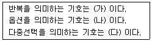
- 가={}, 나=(), 다=[]
- 가=(), 나=[], 다={}
- 가={}, 나=[], 다=()
- 가=(), 나={}, 다=[]
(정답률: 59%)
8. C 언어에서 문자열 입력 함수는?
- gets()
- getchar()
- puts()
- putchar()
(정답률: 70%)
9. C언어에서 부호 없는 10진수 출력 명령에 사용되는 것은?
- %d
- %u
- %c
- %x
(정답률: 63%)
10. PC어셈블리 언어에서 나머지 연산자를 의미하는 것은?
- EQU
- AND
- MOD
- OR
(정답률: 91%)
11. 프로그래밍 언어에서 함수 간에 매개변수를 통한 자료 전달기법이 아닌 것은?
- Call-by-Reference
- Call-by-Name
- Call-by-Value
- Call-by-Stack
(정답률: 64%)
12. C언어에서 포인터(pointer)에 대한 설명으로 틀린 것은?
- 포인터는 주소를 값으로 가질 수 있는 자료형이다.
- 포인터는 메모리 주소 값과 메모리 주소가 가리키는 위치에 있는 값을 다룰 수 있다.
- 포인터의 주소 연산자는 “%”를 이용한다.
- 포인터 변수 선언 시 “*” 연산자를 이용한다.
(정답률: 74%)
13. 어셈블리어에서 어떤 기호적 이름에 상수값을 할당하는 명령은?
- ASSUME
- ORG
- EVEN
- EQU
(정답률: 72%)
14. 레지스터 R1=1100, R2=0101이 저장되어 있을 때, selective-set 연산을 수행한 결과는?
- 0100
- 0101
- 1100
- 1101
(정답률: 73%)
15. Interrupt Service Routine으로부터의 복귀명령에 해당하는 명령은?
- RET
- IRET
- INT 21H
- INT 0H
(정답률: 62%)
16. 객체지향 기법에서 캡슐화에 대한 설명으로 틀린 것은?
- 결합도가 높아진다.
- 응집도가 향상된다.
- 재사용이 용이하다.
- 인터페이스를 단순화 시킬 수 있다.
(정답률: 67%)
17. 같은 상위 객체에서 상속받은 여러 개의 하위 객체들이 다른 형태의 특성을 갖는 객체로 이용될 수 있는 성질은?
- 캡슐화
- 추상화
- 바인딩
- 다형성
(정답률: 77%)
18. C 언어의 구조체(Structuer)에 관한 설명 중 틀린 것은?
- 구조체에 속하는 변수를 멤버(member)라고 부른다.
- 서로 다른 자료형의 변수들을 하나의 이름으로 묶어 하나의 단위로 참조가 가능하다.
- 구조체와 구조체 변수의 선언을 동시에 할 수 없다.
- 구조체에 속한 변수를 참조하기 위해 연산자 “.”을 사용한다.
(정답률: 65%)
19. C 언어의 기억 클래스가 아닌 것은?
- Automatic Variables
- Register Variables
- Internal Variables
- Static Variables
(정답률: 58%)
20. 객체지향 기법에서 어떤 클래스에 속하는 구체적인 객체를 의미하는 것은?
- Method
- Instance
- Operation
- Message
(정답률: 75%)
2과목: 자료구조 및 데이터통신
21. 변조(Keying) 방식에 해당하지 않는 것은?
- TSK
- ASK
- FSK
- APSK
(정답률: 59%)
22. 데이터 교환 방식 중 축적교환 방식이 아닌 것은?
- 메시지 교환
- 회선 교환
- 가상회선
- 데이터그램
(정답률: 50%)
23. 한 문자가 6비트로 되어있는 자료에서 한 문자를 전송하는데 100ms가 소요되었다면 몇 bps로 전송되는가?
- 6
- 10
- 60
- 100
(정답률: 66%)
24. 다음 ( )안에 들어갈 알맞은 용어는?
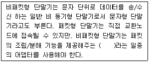
- NPT
- PT
- PAD
- PMX
(정답률: 75%)
25. 다음 LAN의 네트워크 토폴로지(topology)는 어떤 형인가?
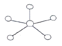
- 성형
- 링형
- 버스형
- 트리형
(정답률: 81%)
26. LAN과 공중 통신망을 접속할 수 있도록 OSI의 모든 계층이 서로 다른 프로토콜의 네트워크를 상호 연결하는 시스템은?
- 라우터(Router)
- 리피터(Repeater)
- 게이트웨이(Gateway)
- 브리지(Bridge)
(정답률: 64%)
27. 다음 설명에 해당하는 OSI 7계층은?
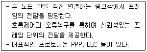
- 물리 계층
- 전송 계층
- 네트워크 계층
- 데이터 링크 계층
(정답률: 70%)
28. 10Base-5 이더넷의 기본 규격에 대한 설명으로 틀린 것은?
- 전송매체는 동축케이블을 사용한다.
- 최대 전송 거리는 50km이다.
- 전송방식은 베이스밴드 방식이다.
- 데이터 전송속도는 10Mbps이다.
(정답률: 53%)
29. IPv6에 대한 설명 중 틀린 것은?
- 40바이트 헤더
- 확장된 옵션 필드
- 흐름 라벨과 우선권
- 128비트로 확장된 주소화 능력
(정답률: 40%)
30. 통신 프로토콜의 기본적인 요소가 아닌 것은?
- 구문
- 의미
- 타이밍
- 인터페이스
(정답률: 67%)
31. 리스트의 길이가 긴 경우 정렬(sorting)방법 중 평균 수행시간이 가장 긴 것은?
- 퀵 정렬
- 힙 정렬
- 버블 정렬
- 2-way merge 정렬
(정답률: 57%)
32. 3단계 데이터베이스 구조의 스키마 종류에 해당하지 않는 것은?
- 관계 스키마
- 외부 스키마
- 개념 스키마
- 내부 스키마
(정답률: 63%)
33. 색인 순차 파일의 색인 구역에 해당하지 않는 것은?
- Track Index Area
- Cylinder Index Area
- Overflow Index Area
- Master Index Area
(정답률: 70%)
34. 릴레이션은 참조할 수 없는 외래키 값을 가질 수 없음을 의미하는 제약조건은?
- 널 무결성
- 도메인 무결성
- 참조 무결성
- 보안 무결성
(정답률: 75%)
35. 트랜잭션의 특성에 해당하지 않는 것은?
- Isolation
- Consistency
- Atomicity
- Distribution
(정답률: 65%)
36. 다음 식을 Postfix notation으로 변환한 결과는?
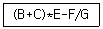
- -B C + E * F G /
- B C + E * - F / G
- B C + E - * F G /
- B C + E * F G / -
(정답률: 59%)
37. 스택의 응용 분야가 아닌 것은?
- 함수 호출의 순서 제어
- 운영체제의 작업 스케줄링
- 후위표기법으로 표현된 수식의 연산
- 부프로그램 호출시 복귀주소 저장
(정답률: 61%)
38. 다음 데이터베이스의 특성 중 틀린 것은?
- 동시 공용(Concurrent Sharing)
- 주소에 의한 참조(Location Reference)
- 계속적 변화(Continuous Evolution)
- 실시간 접근성(Real-Time Accessibility)
(정답률: 59%)
39. 해싱 함수가 아닌 것은?
- Division Method
- Folding Method
- Digit Analysis
- Least Square
(정답률: 50%)
40. 데이터베이스 설계 단계 순서로 옳은 것은?
- 개념적 설계 → 논리적 설계 → 물리적 설계
- 개념적 설계 → 물리적 설계 → 논리적 설계
- 물리적 설계 → 개념적 설계 → 논리적 설계
- 논리적 설계 → 물리적 설계 → 개념적 설계
(정답률: 77%)
3과목: 전자계산기구조
41. 중앙처리장치의 구성요소 중 연산장치에 속하지 않는 것은?
- Adder
- Shift Register
- Program Counter
- Complementer
(정답률: 56%)
42. 제어장치가 제어신호를 발생시키기 위한 자료인 제어 데이터에 관한 설명으로 틀린 것은?
- 메이저 스테이트 사이의 변천을 제어하는 데이터이다.
- 중앙처리장치의 제어점을 제어하는 데이터이다.
- 인스트럭션의 수행순서를 결정하는데 필요한 제어 데이터이다.
- 수치 연산을 위한 데이터이다.
(정답률: 49%)
43. 다음 중 1주소 명령어 형식을 따르는 마이크로명령어 MUL A를 가장 바르게 표현한 것은? (단, 보기의 M[A]는 기억장치와 A번지의 내용을 의미한다.)
- AC ← AC×M[A]
- R1 ← R2×M[A]
- AC ← M[A]
- M[A] ← AC
(정답률: 46%)
44. 컴퓨터 시스템에 예기치 않는 일이 발생하였을 때, CPU가 처리하고 있던 일을 멈추고, 문제점을 신속히 처리한 후 하던 일을 다시 수행하는 방식은?
- 인터페이스
- 제어장치
- 인터럽트
- 버퍼
(정답률: 73%)
45. 캐시의 쓰기 정책 중 Write-through 방식의 단점은?
- 쓰기 동작에 걸리는 시간이 길다.
- 읽기 동작에 걸리는 시간이 길다.
- 하드웨어가 복잡하다.
- 주기억장치의 내용이 무효상태인 경우가 있다.
(정답률: 60%)
46. CISC(Complex Instruction Set Computer)와 RISC(Reduced Instruction Set Computer)에 대한 비교 설명으로 틀린 것은?
- CISC는 명령어와 주소지정 방식을 보다 복잡하게 하여 풍부한 기능을 소유하도록 하고 RISC는 아주 간단한 명령들만 가지고 매우 빠르게 동작하도록 한다.
- CISC는 거의 모든 명령어가 레지스터를 대상으로 하며 메모리의 접근을 최소로 하고 RISC는 명령어 처리 속도를 증가시키기 위해서 독특한 형태로 다기능을 지원하는 메모리와 레지스터를 대상으로 한다.
- RISC는 명령어의 수가 CISC에 비해 비교적 적은 편이며 명령어의 형식도 최소한 줄였다.
- CISC는 데이터 경로가 메모리로부터 레지스터, ALU, 버스로 연결되는 등 다양하고 RISC는 데이터 경로 사이클을 단일화하며 사이클 타임을 최소화한다.
(정답률: 60%)
47. 256×8 RAM 소자를 이용해서 4KB 용량의 메모리를 구성할 때, 필요한 RAM의 개수는? (단, KB=kilo byte이다.)
- 8개
- 16개
- 24개
- 32개
(정답률: 43%)
48. 반가산기에서 입력을 X,Y라 할 때 출력 부분의 캐리(carry) 값은?
- XY
- X
- Y
- X+Y
(정답률: 61%)
49. 곱셈과 나눗셈을 수행하는데 사용하는 연산은?
- 논리적 shift
- 산술적 shift
- ADD
- 로테이트
(정답률: 55%)
50. 수직적 마이크로명령어에 대한 설명으로 틀린 것은?
- 마이크로명령어의 비트 수가 감소된다.
- 제어 기억장치의 용량을 줄일 수 있다.
- 마이크로명령어의 코드화된 비트들을 해독하기 위한 지연이 발생한다.
- 마이크로명령어의 각 비트가 각 제어신호에 대응되도록 하는 방식이다.
(정답률: 27%)
51. 병렬처리를 위한 파이프라인(Pipeline) 기법과 관련한 설명으로 틀린 것은?
- 하나의 연산(Process)을 기능이 서로 다른 여러 개의 부연산(Subprocess)으로 나누어 수행된다.
- 명령어의 호출, 해독 등을 연속으로 수행하기 때문에 자원 충돌(Resources Conflict)이 발생할 수 없다.
- 파이프라인의 각 Segment들이 부연산을 수행하는 시간이 서로 달라 병목현상이 발생할 수 있다.
- 산술 파이프라인(Arithmetic Pipeline)은 부동소수점 연산, 고정소수점 승산 등을 고속으로 하기 위해 사용된다.
(정답률: 57%)
52. 논리식 F=(A+B)·(A+C)을 간략화 한 것은?
- F=A+C
- F=A·C
- F=A+B·C
- F=A·B+C
(정답률: 70%)
53. 병렬 처리를 위한 컴퓨팅 시스템과 관련이 없는 것은?
- 파이프라이닝
- 멀티 프로세서
- 배열 프로세서
- 매크로 프로세서
(정답률: 59%)
54. 어떤 컴퓨터의 메인 메모리가 하나의 Parity bit를 포함하여 각각 17bit씩 256M 워드로 구성되어 있을 때, 전체 메모리를 지정하기 위한 최소 어드레스 비트 수는?
- 11
- 25
- 28
- 45
(정답률: 43%)
55. 셀렉터 채널(Selector Channel)과 관련한 설명으로 틀린 것은?
- 버스트 방식(Burst Mode)으로 동작한다.
- 한 번에 한 블록을 전송한다.
- 하나의 입출력장치를 독점하여 운영하는 형태로 볼 수 있다.
- 주로 모니터나 프린터와 같은 저속의 입출력장치에 대하여 사용한다.
(정답률: 48%)
56. 다음 조합 논리 회로의 명칭은?
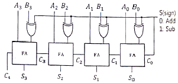
- 플립플롭
- 4비트 비교기
- 4×4 디코더
- 4비터 병렬 가감산기
(정답률: 60%)
57. 플립플롭에 대한 설명 중 틀린 것은?
- D 플립플롭의 D 입력에 1을 입력하면 출력은 1이 된다.
- T 플립플롭은 JK 플립플롭 두 개의 입력을 하나로 묶은 플립플롭이다.
- JK 플립플롭의 입력 JK에 동시에 0이 입력되면 출력은 현 상태의 값이 된다.
- JK 플립플롭의 입력 JK에 동시에 1이 입력되면 출력은 1이 된다.
(정답률: 56%)
58. 주기억장치의 200번지에 저장되어 있는 명령어의 주소 필드 값이 200이라고 할 때, 유효주소(effective address)로 옳은 것은? (단, 상대 주소 지정방식을 사용하는 컴퓨터라 가정한다.)
- 200번지
- 201번지
- 400번지
- 401번지
(정답률: 24%)
59. Cycle Stealing과 Interrupt에 관한 설명 중 옳은 것은?
- Interrupt가 발생하면 Interrupt가 처리될 때까지 CPU는 쉰다.
- Interrupt 발생 시에는 CPU의 상태보전이 필요 없다.
- Instruction 수행 도중에 Cycle Stealing이 발생하면 CPU는 그 Cycle Stealing이 발생하면 CPU는 그 Cycle Stealing 동안 정지된 상태가 된다.
- Cycle Stealing의 발생 시에는 CPU의 상태보존이 필요하다.
(정답률: 55%)
60. 두 데이터의 비교(Compare)를 위한 논리연산은?
- OR
- AND
- XOR
- NOT
(정답률: 66%)
4과목: 운영체제
61. 프로세서의 상호 연결 구조 중 하이퍼 큐브 구조에서 각 CPU가 3개의 연결점을 가질 경우 총 CPU의 개수는?
- 2
- 3
- 4
- 8
(정답률: 64%)
62. SJF(Shortest-Job-First) 스케줄링 방법에 대한 설명으로 틀린 것은?
- FIFO 기법보다 평균대기시간이 감소된다.
- 작업 시간이 큰 경우 오랫동안 대기하여야 한다.
- 모든 프로세스의 프로세서 요구시간을 미리 예측하기 쉽다.
- 작업이 끝날 때까지의 실행시간 추정치가 가장 작은 작업을 먼저 실행시킨다.
(정답률: 46%)
63. 시스템에서 교착상태(DEAD-LOCK)가 발생할 조건이 아닌 것은?
- 대기(Wait) 조건
- 동기(Synchronization) 조건
- 비선점(Non-Preemptive) 조건
- 상호배제(Mutual Exclusion) 조건
(정답률: 55%)
64. 운영체제에 대한 설명으로 틀린 것은?
- 사용자 인터페이스를 제공한다.
- 자원의 효과적인 경영 및 스케줄링을 한다.
- 여러 사용자들 사이에서 자원의 공유를 가능하게 한다.
- 입·출력에 있어서 주된 역할을 담당한다.
(정답률: 52%)
65. fork 함수의 결과값이 양수인 경우 현재 프로세스는?
- 에러
- 부모 프로세스
- 자식 프로세스
- 루트 프로세스
(정답률: 55%)
66. 모니터(Monitor)에 대한 설명으로 옳지 않은 것은?
- 모니터에서 사용되는 연산은 Wait와 Signal이 있다.
- 모니터 외부의 프로세스는 모니터 내부의 데이터를 직접 액세스 할 수 없다.
- 특정의 공유자원을 할당하는데 필요한 데이터 및 프로시듀어를 포함하는 병행성구조(concurrency-construct)이다.
- 모니터 내의 자원을 원하는 프로세스는 반드시 해당 모니터의 진입부(entry)를 호출해야 하고, 원하는 모든 프로세스는 동시에 모니터 내에 들어갈 수 있다.
(정답률: 53%)
67. SJF 방법의 단점을 보완하여 개발한 것으로, 프로그램의 처리 순서는 그 실행(서비스) 시간의 길이뿐만 아니라 대기 시간에 따라 결정되는 스케줄링 방식은?
- SRT
- HRN
- MFQ
- RR
(정답률: 57%)
68. 다음 시스템 소프트웨어 중 성격이 다른 것은?
- Loader
- Assembler
- Interpreter
- Compiler
(정답률: 49%)
69. 다음 중 비선점 스케줄링 방식이 아닌 것은?
- FIFO(First In First Out)
- SJF(Shortest Job First)
- MQ(Multi-level Queue)
- HRN(Hightest Response-ration Next)
(정답률: 50%)
70. 파일 디스크립터(File Descriptor)의 정보에 포함 되지 않는 것은?
- 파일 구조
- 파일 유형
- 파일 크기
- 파일 작성자
(정답률: 65%)
71. Public Key System에 대한 설명으로 틀린 것은?
- 키의 분배가 용이하다.
- 암호화키와 해독키가 따로 존재한다.
- 대칭 암호화 기법이다.
- 공용키 암호화 기법을 이용한 대표적 암호화 방식에는 RSA가 있다.
(정답률: 45%)
72. 기억장치 관리 기법 중 기억장치 관리에서 단편화를 해결하기 위해 Compaction을 실행하며, 이 과정에서 프로그램의 주소를 새롭게 지정해 주는 기법은?
- Coalescing
- Garbage Collection
- Relocation
- Swapping
(정답률: 61%)
73. 분산 처리 시스템에 대한 설명으로 옳지 않은 것은?
- 시스템의 점진적 확장이 용이하다.
- 연산 속도, 신뢰성, 사용 가능도가 향사된다.
- 중앙 집중형 시스템에 비해 시스템 설계가 간단하고 소프트웨어 개발이 쉽다.
- 단일 시스템에 비해 처리 능력과 저장용량이 높고 신뢰성이 향상된다.
(정답률: 69%)
74. 시스템의 성능 평가 요인으로 거리가 먼 것은?
- 신뢰도
- 처리 능력
- 응답 시간
- 프로그램 크기
(정답률: 69%)
75. RR(Round-Robin) 알고리즘을 사용하여 A, B, C, D, E의 작업을 실행시킬 때, 대기시간은 다음과 같다. 평균 대기시간은?
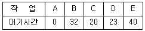
- 25
- 23
- 18
- 12
(정답률: 63%)
76. 주기억장치 관리 기법 중 Worst Fit을 사용할 경우 10K의 프로그램이 할당받게 되는 영역은? (단, 모든 영역은 현재 공백 상태라고 가정한다.)
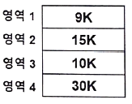
- 영역 1
- 영역 2
- 영역 3
- 영역 4
(정답률: 64%)
77. 다음 중 스레드(thread)당 포함되어 있는 항목에 해당되지 않는 것은 무엇인가?
- 스택
- 타이머
- 레지스터 집합
- 프로그램 카운터
(정답률: 40%)
78. UNIX 파일 시스템의 디렉토리 구조로 옳은 것은?
- single level directory
- two level directory
- tree structured directory
- hashing directory
(정답률: 47%)
79. FIFO 스케줄링에서 3개의 작업 도착시간과 CPU 사용시간(burst time)이 다음 표와 같을 때, 모든 작업들의 평균 반환시간은? (단, 소수점 이하는 반올림 처리한다.)
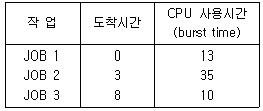
- 12
- 36
- 58
- 69
(정답률: 48%)
80. 3개의 페이지를 수용할 수 있는 주기억장치가 있으며, 초기에는 모두 비어 있다고 가정한다. 다음의 순서로 페이지 참조가 발생할 때, LRU(Least Recently Used) 페이지 교체 알고리즘을 사용할 경우 몇 번의 페이지 결함이 발생하는가?
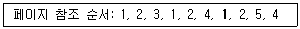
- 6
- 7
- 8
- 9
(정답률: 45%)
5과목: 마이크로 전자계산기
81. 덧셈 명령어(Instruction)는 어떤 종류의 명령어 집합에 속하는가?
- Data Transfer
- Data Manipulation
- Program Control
- Input and Output
(정답률: 50%)
82. 즉시 주소 지정 방식(Immediate Addressing Mode)에 대한 설명으로 틀린 것은?
- 유효 주소를 얻기 위해 프로그램 카운터(PC)의 내용과 명령어의 피연산자 내용을 더하는 방식이다.
- 명령어의 피연산자 부분에 데이터의 값을 직접 넣어 주는 방식이다.
- 데이터를 인출하기 위해 추가로 주기억장치를 접근할 필요가 없다.
- 명령어 길이가 짧은 컴퓨터에서는 표현 가능한 데이터의 길이에 제한이 있다.
(정답률: 28%)
83. 어떤 마이크로컴퓨터 시스템의 버스 사이클과 DMA 전송을 버스트(burst) 방식으로 실행할 경우 10바이트 데이터를 고속 I/O 주변장치의 DMA 전송 시 몇 번의 시스템 버스 이양 요청과 양도가 이루어지는가? (단, 이양 요청과 양도를 합하여 1회로 본다.)
- 1회
- 2회
- 10회
- 20회
(정답률: 40%)
84. 고수준 언어로 작성된 프로그램을 기계어로 번역하기 위한 프로그램은?
- 에디터
- 컴파일러
- 어셈블러
- 로더
(정답률: 55%)
85. 인터럽트에서 Polling의 우선순위는 프로그램 순서를 바꾸면 달라지므로 이를 하드웨어를 사용하여 고정한 것을 무엇이라 하는가?
- 벡터 인터럽트
- Daisy-chain
- 타이머 인터럽트
- Block-chain
(정답률: 59%)
86. 직렬 통신 속도를 결정해 주기 위한 클록을 공급해 주는 것은?
- 병렬-직렬 변환기(Parallel-Serial Converter)
- 보레이트 공급기(Baud Rate Generator)
- 카운터 타이머 회로(Counter-Timer Circuit)
- DMA(Direct Memory Access)
(정답률: 57%)
87. 인터럽트 요청 및 서비스에 관한 순서가 옳게 나열된 것은?
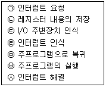
- ㉠-㉡-㉢-㉣-㉦-㉤-㉥
- ㉠-㉡-㉣-㉢-㉦-㉤-㉥
- ㉠-㉣-㉡-㉢-㉦-㉤-㉥
- ㉠-㉣-㉢-㉡-㉦-㉤-㉥
(정답률: 39%)
88. DMA(Direct Memory Access) 장치를 구성하는 레지스터(register)가 아닌 것은?
- Address Register
- Word Counter
- Control Register
- Block Register
(정답률: 44%)
89. 마이크로컴퓨터의 CPU 역할이 아닌 것은?
- 인터럽트 요구에 대한 처리를 한다.
- 기억 소자와 데이터를 주고 받는다.
- 명령어를 Fetch, Execute 한다.
- 플립플롭(Flip Flop)을 저장한다.
(정답률: 61%)
90. 좋은 소프트웨어가 갖는 특징이 아닌 것은?
- 사용자가 이해하기 쉽다.
- 프로그램이 길고, 복잡하다.
- 전체적인 흐름을 추적하기에 용이하다.
- 다른 시스템에 적용, 결합하는 등 응용성이 뛰어나다.
(정답률: 71%)
91. Static RAM을 구성하는 회로는?
- 플립플롭
- 인코더
- 단안정 멀티바이브레이터
- 비안정 멀티바이브레이터
(정답률: 46%)
92. 다음 기억소자 중 기억된 내용을 여러 번 지워서 사용할 수 있는 것은?
- ROM
- PLC
- EPROM
- PLA
(정답률: 64%)
93. I/O-mapped-I/O와 memory-mapped-I/O에 대한 설명 중 틀린 것은?
- I/O-mapped-I/O에서는 입ㆍ출력을 가리키는 두 개의 제어신호가 필요하다.
- I/O-mapped-I/O에서는 memory와 I/O 주소 공간을 공유한다.
- memory-mapped-I/O에서는 I/O 장치를 호출하는 데 메모리형 명령어를 사용한다.
- memory-mapped-I/O에서는 memory location을 제한한다.
(정답률: 41%)
94. 다음 중 시프트(Shift)를 수행하는 명령어에 속하지 않는 것은?
- ROR
- COMC
- SHR
- SHRA
(정답률: 54%)
95. A/D 변환기의 오차를 나타내는 것이 아닌 것은?
- 분해능(Resolution)
- 오프셋(Offset)
- 이득(Gain)
- 비선형(Integral Non-lineality)
(정답률: 35%)
96. 주소 지정 방식의 장점이 아닌 것은?
- 피연산자의 Bit 수를 줄여서 명령어의 길이를 짧게 할 수 있다.
- 여러 가지의 주소 지정 방식에 의해 프로그램 작성의 융통성이 있다.
- 주소 필드의 길이 지정을 통해 주기억 장치의 접근 속도를 레지스터보다 빠르게 할 수 있다.
- 프로그램들을 재배치 가능한 방식을 이용하여 시스템의 자원을 효율적으로 사용할 수 있다.
(정답률: 39%)
97. 칩 슬라이스로 구성한 마이크로 전자계산기가 마이크로 프로세서로 구성한 마이크로 전자계산기보다 상대적으로 유리하다고 생각되는 장점 중 틀린 것은?
- 연산속도
- 가격
- 확장성
- 적응성
(정답률: 52%)
98. 다음 중 가장 많은 양의 자료를 일정 시간에 입ㆍ출력할 수 있는 방식은?
- 프로그램에 의한 입ㆍ출력
- 인터럽트에 의한 입ㆍ출력
- DMA
- 직렬 입ㆍ출력
(정답률: 43%)
99. 보조기억장치에 저장되어 있는 정보를 주기억장치로 읽어오는 작업을 의미하는 것은?
- Transfer
- Load
- Store
- Compile
(정답률: 65%)
100. Byte Multiplexer Channel과 관련한 설명으로 틀린 것은?
- 한 번에 한 바이트만을 전송한다.
- 모니터, 프린터와 같은 저속 입ㆍ출력장치에 대하여 사용한다.
- 시분할 방식(Time Sharing)에 의해서 매우 짧은 시간 동안에 하나씩 돌아가면서 한 바이트씩 입출력한다.
- 바이트 전송 속도를 선택할 수 있어 Selector Channel이라고도 불린다.
(정답률: 36%)